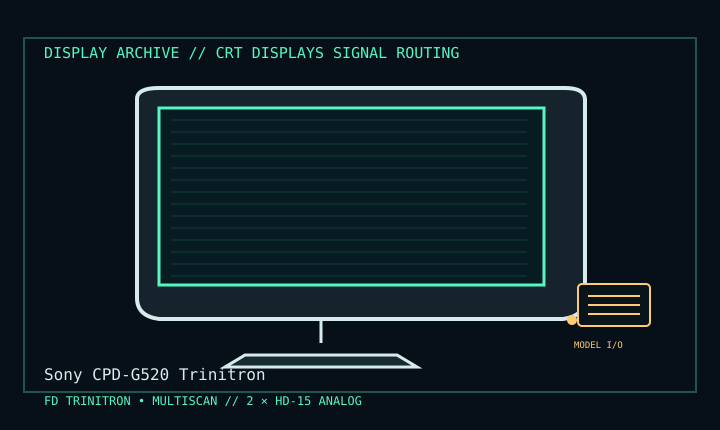

[ INDIVIDUAL COMPONENT // DISPLAY ARCHIVE ]
Sony CPD-G520 Trinitron
21-inch-class FD Trinitron desktop CRT from Sony’s late CRT era.

IDENTIFICATION: Match the exact model suffix, region and installed option boards to the cited manual and rear label. Do not infer electrical compatibility from connector shape.
Model-specific specifications
| Catalog class | Crt Displays |
|---|---|
| Exact product | Sony CPD-G520 Trinitron |
| Era / purpose | 21-inch-class FD Trinitron desktop CRT from Sony’s late CRT era. |
| Tube / image | 21-inch FD Trinitron CRT, approximately 19.8-inch viewable; 0.24 mm aperture grille. |
| Maximum timing | Up to 2048 × 1536 at 75 Hz within the specified scan range; maximum resolution does not guarantee readable text or optimum focus. |
| Scan / inputs | Horizontal 30–130 kHz, vertical 48–170 Hz; two 15-pin HD D-sub analog RGB inputs. |
| Power / mechanical | Universal mains 100–240 V AC, 50/60 Hz; desktop stand with tilt/swivel/height adjustment. Approximate mass 32 kg; confirm label and supplied stand. |
Revision, timing & host compatibility
Analog RGB only: use an analog VGA source or an active digital-to-analog converter. It does not accept digital DVI/HDMI/DisplayPort directly. Respect supported sync/timing and do not exceed the specified scan limits. The CPD-G520 is distinct from the G500 and other G-series models; confirm suffix and rear ID.
Before operation, compare source signal type, scan/frame timing, pinout, interface bandwidth, input-board configuration and mains/DC rating against the model-specific manual and nameplate. A listed maximum mode is not a promise of optimum image quality.
Vintage preservation & repair notes
Two-person handling; support the chassis rather than the glass. Record hours, focus, convergence, geometry, grille damage and degauss behavior. Use the G520-specific Sony manual for adjustments; internal CRT service presents lethal high voltage.
Record serial/date code, configuration, all installed interface boards, accessories, image condition, calibration state, test source and document edition. Disconnect power before external cleaning and use only the manufacturer-approved procedure; do not open CRT/LCD/OLED equipment without qualified service practice.
Manufacturer manuals & specifications
- Sony CPD-G520 Operating InstructionsSony model-specific operating manual with supported scan ranges, connections and safety.
- Sony CPD-G520 Manuals & SpecificationsManufacturer archive for documentation matching the CPD-G520 model.